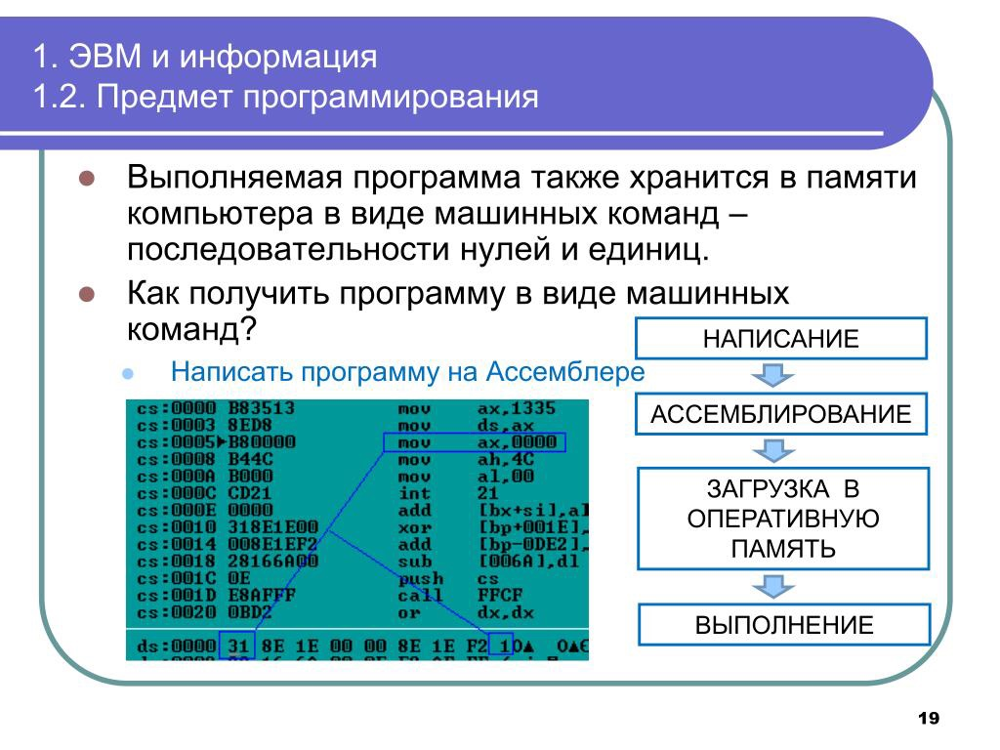
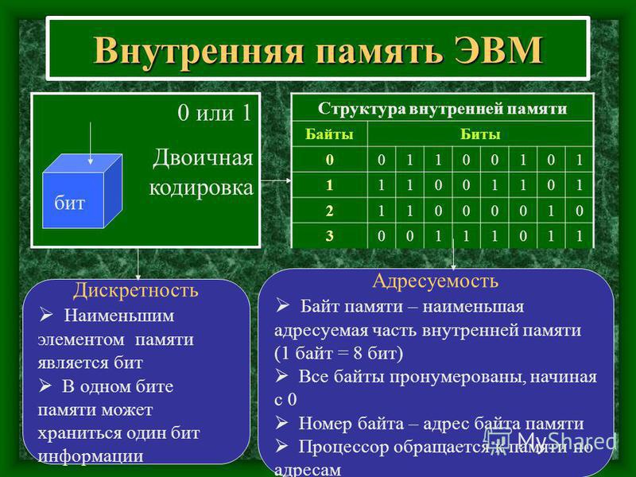
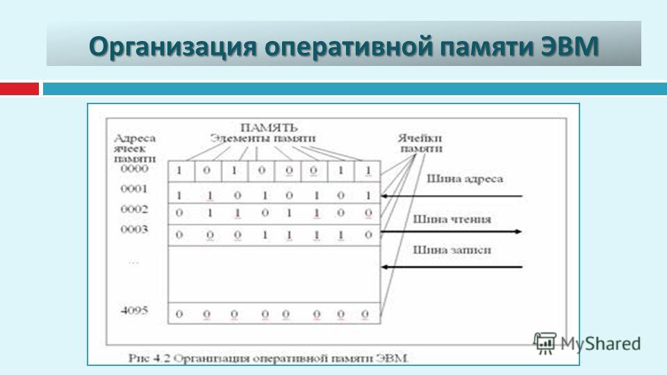
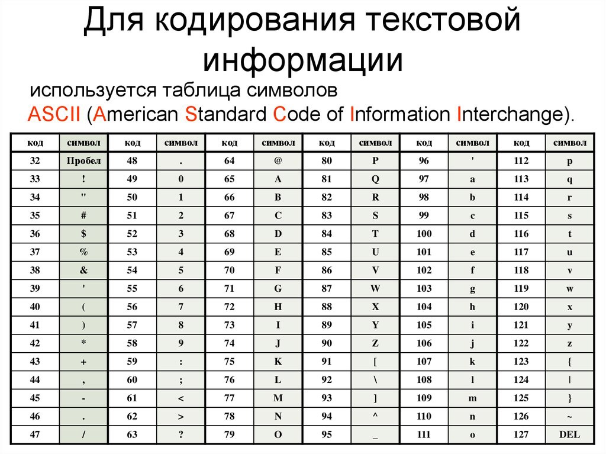

Под хранением обычно понимают запись данных на некоторые накопители данных, с целью их (данных) дальнейшего использования.
При выполнении программы все ее данные хранятся в оперативной памяти компьютера. Количество памяти, требуемой для экземпляров данных (в байтах), и место их хранения зависит от используемого ими типа. При выполнении программы для хранения данных используются два участка оперативной памяти, которые называются стеком (stack) и кучей (heap). На рис. 1. схематически показаны стек и куча и связь с ними переменных программы.
Стек (stack) – это линейный участок памяти (массив), который действует как структура данных типа "Последним пришел – первым ушел" (last-in, first-out – LIFO). Основной особенностью стека является то, что данные могут добавляться только в вершину стека и удаляться из нее. Добавление и удаление данных из произвольного места стека невозможно. Операции по добавлению и удалению элементов из стека выполняются очень быстро. Однако размер стека, как правило, ограничен, и время хранения данных зависит от времени жизни переменной. Для всех локальных переменных методов и передаваемых методам параметров память выделяется в вершине стека. После того, как методы заканчивают работу, вся выделенная память в стеке для их переменных автоматически освобождается.

Рис. 1. Использование в программе стека и кучи
Куча (heap) – это область оперативной памяти, в разных частях которой могут выделяться участки для хранения объектов классов. В отличие от стека, такие участки памяти в куче могут выделяться и освобождаться в любом порядке. Хотя программа может хранить элементы данных в куче, она не может явно удалять их из нее. Вместо этого компонент среды CLR, называемый "Сборщиком мусора" (Garbage Collector, GC), автоматически удаляет неиспользуемые участки кучи, когда он определит, что код программы уже не имеет доступа к ним (не хранит их адреса).
Локальные переменные методов хранятся следующим образом:
- • Значащие типы хранятся только в одном участке памяти, который хранит реальные данные и размещается в стеке.
- • Ссылочные типы требуют два участка памяти: первый – содержит реальные данные (сами объекты) и всегда размещается в куче; второй – размещается в стеке и содержит ссылку (адрес), которая указывает на размещения объекта в куче.



Оперативное запоминающее устройство, или оперативная память, - это массив кристаллических ячеек, способных хранить данные. Ее основная особенность заключена в том, что хранение информации в ней осуществляется только до тех пор, пока компьютер включен. При выключении компьютера вся хранимая информация сразу же удаляется без возможности восстановления, т.е. это энергозависимая память.

Основные понятия: таблица кодировки ASCII, принцип последовательного кодирования алфавита.
Нажатие клавиши на клавиатуре приводит к тому, что сигнал посылается в компьютер в виде двоичного числа, которое хранится в таблице кодировки.
Таблица кодировки - таблица, в которой устанавливается соответствие между символами и их порядковыми номерами в компьютерном алфавите.
Все символы компьютерного алфавита пронумерованы от 0 до 255. Каждому номеру соответствует 8-разрядный двоичный код от 00000000 до 11111111. Этот код есть порядковый номер символа в двоичной системе счисления.
Для разных типов ЭВМ используются различные таблицы кодировки. С распространением персональных компьютеров типа IBM PC международным стандартом стала таблица кодировки под названием ASCII (American Standard Code for Information Interchange) – Американский стандартный код для информационного обмена. Стандартными в этой таблице являются только первые 128 символов, т.е. символы с номерами от нуля (двоичный код 00000000) до 127.(01111111). Сюда входят буквы латинского алфавита, цифры, знаки препинания, скобки и некоторые другие символы. Остальные 128 кодов, начиная со 128 (двоичный код10000000) и кончая 255 (11111111), используются для кодировки букв национальных алфавитов, символов псевдографики и научных символов. В русских национальных кодировках в этой части таблицы размещаются символы русского алфавита. Принцип последовательного кодирования алфавита: в кодовой таблице ASCII латинские буквы (прописные и строчные) располагаются в алфавитном порядке. Расположение цифр также упорядочено по возрастанию значений. Данное правило соблюдается и в других таблицах кодировки. Благодаря этому и в машинном представлении для символьной информации сохраняется понятие «алфавитный порядок».
